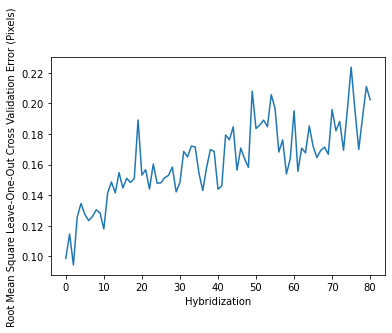

Example
Note: this page was generated from a jupyter notebook and sample data both of which are freely available in the seqfish_fm_match github repository. A version of this notebook is also freely available on Google Colab.
import pandas as pd
import numpy as np
from seqfish_fm_match_ import FMMatcher
import matplotlib.pyplot as plt
Read in example data
ref_init = pd.read_csv("../example_data/initial_reference.csv")
ref_final = pd.read_csv("../example_data/final_reference.csv")
ro = pd.read_csv("../example_data/bright_ro_dots.csv")
Example data is from channel 561 of position 4 in replicate 2 of the original seqFISH+ NIH3T3 cell experiment. It was chosen for its small size. x and y distance units are in pixels. Intensity units are arbitrary.
Look at the data
ref_init.head()
| x | y | z | int | |
|---|---|---|---|---|
| 0 | 31.999543 | 1080.999984 | 0 | 17773.627270 |
| 1 | 114.754283 | 544.884195 | 0 | 6868.670956 |
| 2 | 86.710022 | 1613.105294 | 0 | 3367.605233 |
| 3 | 421.228328 | 864.232003 | 0 | 3608.949352 |
| 4 | 680.397582 | 491.218607 | 0 | 3503.164018 |
ref_final.head()
| x | y | z | int | |
|---|---|---|---|---|
| 0 | 31.999262 | 1080.999826 | 0 | 17956.057860 |
| 1 | 115.548279 | 540.132421 | 0 | 4546.240240 |
| 2 | 730.826144 | 424.953615 | 0 | 3666.393698 |
| 3 | 792.032219 | 473.490937 | 0 | 4207.299912 |
| 4 | 823.372502 | 1016.670800 | 0 | 9650.076824 |
ro.head()
| hyb | x | y | z | int | |
|---|---|---|---|---|---|
| 0 | 0 | 31.999691 | 1081.000000 | 0 | 17634.928440 |
| 1 | 0 | 115.753690 | 544.112930 | 0 | 8089.031985 |
| 2 | 0 | 87.782786 | 1612.176181 | 0 | 3768.478697 |
| 3 | 0 | 272.071022 | 1516.792724 | 0 | 3625.500395 |
| 4 | 0 | 422.286671 | 863.441670 | 0 | 3874.274898 |
Index the readout dataframe by the hyridization in which the dots were found
ro.set_index("hyb", inplace=True)
ro.head()
| x | y | z | int | |
|---|---|---|---|---|
| hyb | ||||
| 0 | 31.999691 | 1081.000000 | 0 | 17634.928440 |
| 0 | 115.753690 | 544.112930 | 0 | 8089.031985 |
| 0 | 87.782786 | 1612.176181 | 0 | 3768.478697 |
| 0 | 272.071022 | 1516.792724 | 0 | 3625.500395 |
| 0 | 422.286671 | 863.441670 | 0 | 3874.274898 |
Create the FMMatcher Object
dm = FMMatcher(ro, ref_init, ref_final)
Auto find parameters.
This does a grid search for parameters that work well in matching the initial and final reference fiducial marker patterns, so it might take a few minutes.
dm.auto_set_params()
You can save and load the parameters
dm.save_params("saved_parameters.csv")
ref_init = pd.read_csv("../example_data/initial_reference.csv")
ref_final = pd.read_csv("../example_data/final_reference.csv")
dm2 = FMMatcher(ro, ref_init, ref_final)
dm2.load_saved_parameters("saved_parameters.csv")
Alternatively, set the search parameters manually. Only one set of reference fiducial markers is necessary if you do this.
ref_init = pd.read_csv("../example_data/initial_reference.csv")
dm3 = FMMatcher(ro, ref_init)
Finding Reference Edges
These parameters must be set manually if you do not run the auto_set_params method
dm3.set_xy_search_error(0.39) # The lateral position vectors between pairs of fiducial markers in the reference
# and readout images are allowed to differy by 0.39 distance units
dm3.set_z_search_error(0) # the z position vectors between pairs of fiducial markers in the reference
# and readout images are allowed to differ by 0 distance units (the example data is 2D)
dm3.set_min_bright_prop(0.18) # the intensity of readout dots matched to reference dots must be at least 0.18 times
# the reference intensity
dm3.set_max_bright_prop(3.7) # the intensity of readout dots matched to reference dots must be no more than 3.7
# times the reference intensity
These parameters have a default value, and to not require, but allow user tuning. Default values are set here.
dm3.set_min_edge_match(5) # readout dots must be matched in at least 5 fiducial marker pairs to be considered well match
dm3.set_n_longest_edges(30*len(ref_init.x)) # index this many of the farthest apart pairs of fiducial markers in the
# reference imageto search for initial matches in each hybs
dm3.set_n_unmatch_give_up(100) # If after finding an inital fatching pair, the first 100 other reference fiducial markers
#searched for are not found, consider the initial match a false match
dm3.set_min_dot_matches(10) # fiducial marker pattern matches finding fewer than 10 dots in the readout are failures.
dm3.set_outlier_sd_thresh(3.0) # remove fiducial that drift a distance of z-score 3 or greater than the others
dm3.set_min_fm_hyb_matches(int((max(ro.index)-min(ro.index))/2)) # fiducial markers should be found at in at least
# half of the hybridizations
Finding Reference Edges
These parameters are optional and ommited by default, but can help speed up the computation if provided
dm3.set_max_lat_offset(500) # only match dots in readout images that have drifted less than 500 lateral distance units
# from their location in the reference image
dm3.set_max_z_offset(10) # only match dots in readout stacks that have drifted less than 10 z distance units
# from their location in the reference stack.
Run the Alignment
dm.align()
View the results
dm.offsets
| hyb | x | y | z | x_SE | y_SE | z_SE | n_matches | |
|---|---|---|---|---|---|---|---|---|
| 0 | 0 | 0.953194 | -0.781336 | 0.0 | 0.007805 | 0.005930 | 0.0 | 88 |
| 1 | 1 | 1.417761 | -0.500650 | 0.0 | 0.008526 | 0.008233 | 0.0 | 77 |
| 2 | 2 | 1.706141 | -0.292566 | 0.0 | 0.005957 | 0.005933 | 0.0 | 73 |
| 3 | 3 | 1.011257 | -0.176718 | 0.0 | 0.007645 | 0.008230 | 0.0 | 81 |
| 4 | 4 | 0.830480 | -0.149615 | 0.0 | 0.007187 | 0.007166 | 0.0 | 75 |
| ... | ... | ... | ... | ... | ... | ... | ... | ... |
| 76 | 76 | 2.373315 | -2.655393 | 0.0 | 0.014264 | 0.018030 | 0.0 | 77 |
| 77 | 77 | 2.213059 | -2.804471 | 0.0 | 0.010665 | 0.014049 | 0.0 | 66 |
| 78 | 78 | 1.878191 | -2.918742 | 0.0 | 0.010371 | 0.018617 | 0.0 | 71 |
| 79 | 79 | 1.208916 | -2.967791 | 0.0 | 0.014505 | 0.019095 | 0.0 | 71 |
| 80 | 80 | 1.080502 | -2.926247 | 0.0 | 0.011422 | 0.019532 | 0.0 | 72 |
81 rows × 8 columns
View error estimates
dm.loocv_alignment_errors
| ref_x | ref_y | ref_z | ref_int | hyb | loocv_align_x | loocv_align_y | loocv_align_z | comp_int | x_diff | y_diff | z_diff | |
|---|---|---|---|---|---|---|---|---|---|---|---|---|
| 0 | 114.754283 | 544.884195 | 0.0 | 6868.670956 | 0 | 114.805972 | 544.889225 | 0.0 | 8089.031985 | 0.051689 | 0.005030 | 0.0 |
| 1 | 114.754283 | 544.884195 | 0.0 | 6868.670956 | 1 | 114.741675 | 544.813096 | 0.0 | 5899.712727 | -0.012608 | -0.071099 | 0.0 |
| 2 | 114.754283 | 544.884195 | 0.0 | 6868.670956 | 2 | 114.767609 | 544.805502 | 0.0 | 5570.644691 | 0.013326 | -0.078693 | 0.0 |
| 3 | 114.754283 | 544.884195 | 0.0 | 6868.670956 | 3 | 114.743385 | 544.885821 | 0.0 | 6709.645106 | -0.010898 | 0.001626 | 0.0 |
| 4 | 114.754283 | 544.884195 | 0.0 | 6868.670956 | 4 | 114.764577 | 544.866750 | 0.0 | 7184.663680 | 0.010294 | -0.017444 | 0.0 |
| ... | ... | ... | ... | ... | ... | ... | ... | ... | ... | ... | ... | ... |
| 74 | 1942.005954 | 1138.569406 | 0.0 | 9798.582014 | 74 | 1941.975062 | 1138.248613 | 0.0 | 5674.030592 | -0.030892 | -0.320793 | 0.0 |
| 75 | 1942.005954 | 1138.569406 | 0.0 | 9798.582014 | 75 | 1942.284749 | 1138.282820 | 0.0 | 6689.730733 | 0.278795 | -0.286586 | 0.0 |
| 76 | 1942.005954 | 1138.569406 | 0.0 | 9798.582014 | 76 | 1941.999969 | 1138.195781 | 0.0 | 7518.567025 | -0.005985 | -0.373625 | 0.0 |
| 78 | 1942.005954 | 1138.569406 | 0.0 | 9798.582014 | 78 | 1941.901542 | 1138.106969 | 0.0 | 6692.708334 | -0.104412 | -0.462437 | 0.0 |
| 80 | 1942.005954 | 1138.569406 | 0.0 | 9798.582014 | 80 | 1942.035848 | 1138.242551 | 0.0 | 6919.025107 | 0.029894 | -0.326855 | 0.0 |
5866 rows × 12 columns
Plot Mean Square Leave-One-Out Cross Validation Error Estimates
dm.loocv_alignment_errors.loc[:,'latdiffsq'] = dm.loocv_alignment_errors.x_diff**2 + dm.loocv_alignment_errors.y_diff**2
mean_square_errors = dm.loocv_alignment_errors.groupby('hyb').mean()['latdiffsq']
plt.plot(np.sqrt(mean_square_errors))
plt.xlabel("Hybridization")
plt.ylabel("Root Mean Square Leave-One-Out Cross Validation Error (Pixels)")
Text(0, 0.5, 'Root Mean Square Leave-One-Out Cross Validation Error (Pixels)')

Save the results
dm.save_offsets("offsets_all.csv")
It is useful to save leave-one-out cross validation error estimates for the alignment shifts and records of which readout dots matched to which reference dots.
dm.save_loocv_errors("loov_errors_all.csv")
dm.save_matches("matches_all.csv")